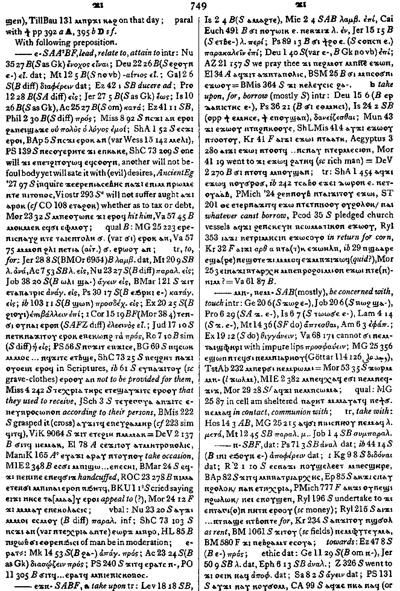
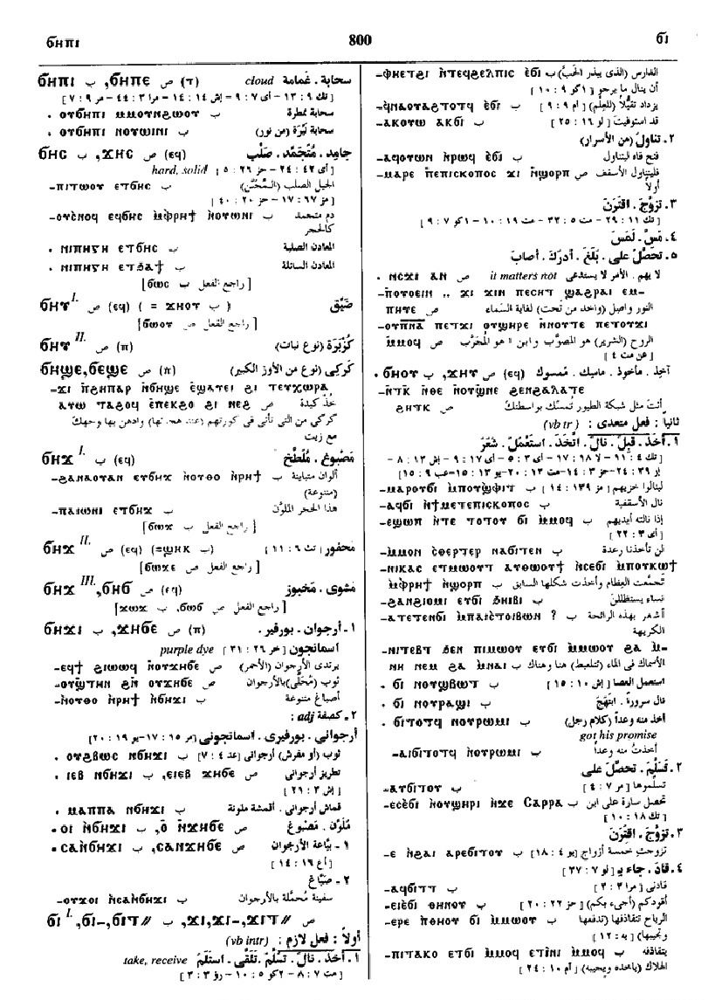
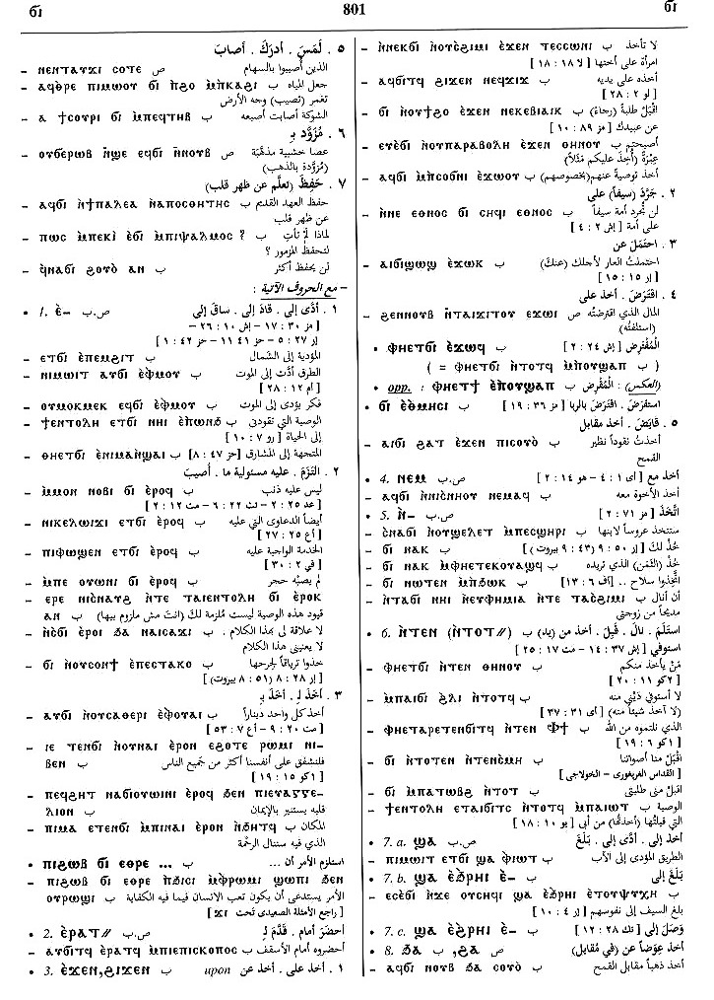
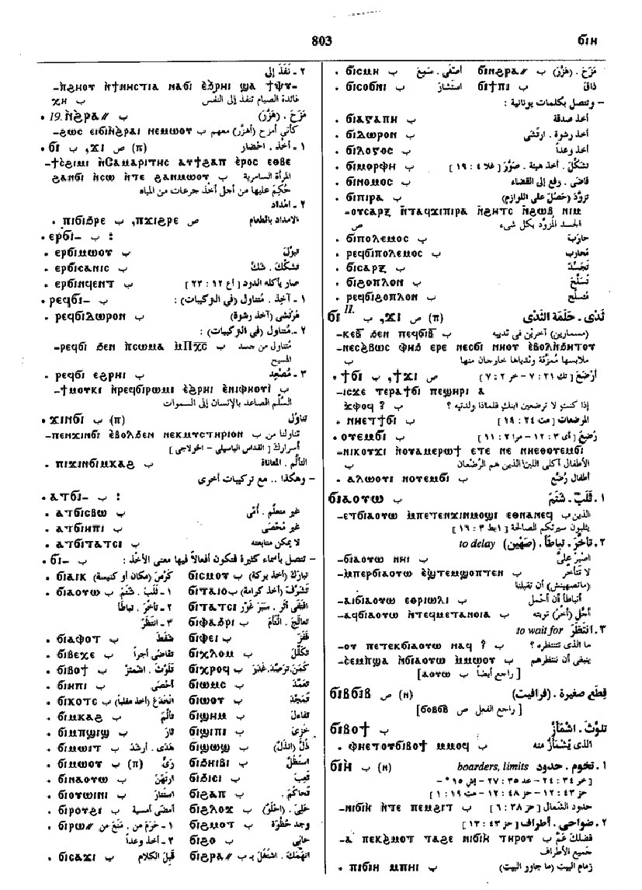
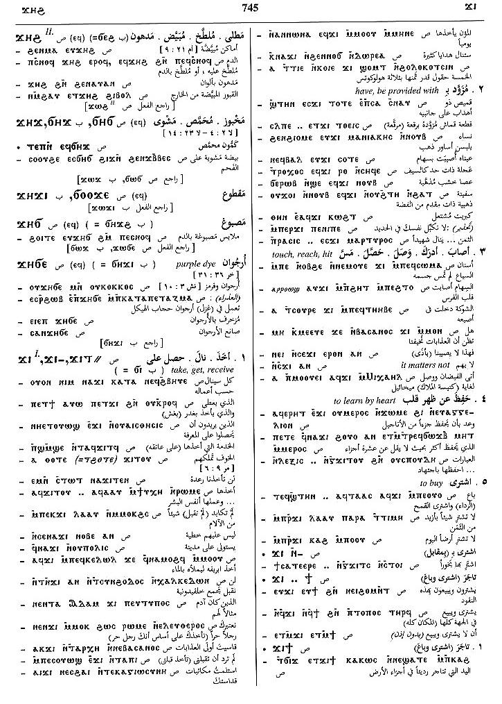
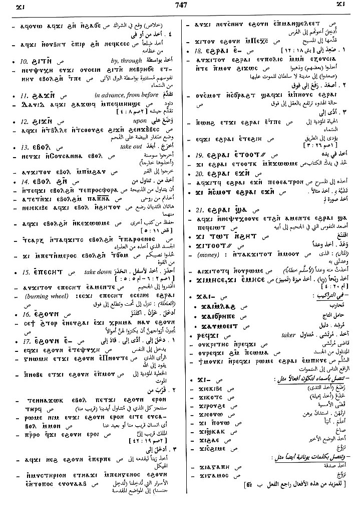

(verb)
intr:
― receive, take [λαμβανειν, δεχεσθαι, κομιζεσθαι]
― take wife, marry [γαμειν]
― touch, reach, hit
tr:
― take, get, bring, accept [λαμβανειν]
― have, be provided with
― touch, reach, hit
― learn (by heart)
― buy S
― receive, take [λαμβανειν, δεχεσθαι, κομιζεσθαι]
― take wife, marry [γαμειν]
― touch, reach, hit
tr:
― take, get, bring, accept [λαμβανειν]
― have, be provided with
― touch, reach, hit
― learn (by heart)
― buy S
(S, A, sA, F)
ϫⲓ
(Sf) ϫⲉⲓ, ϫⲓⲉⲓ, ϫⲉ
(B) ϭⲓ
(S, A, sA, F, O) ϫⲓ-
(S, F) ϫⲉ-
(S) ϫⲉⲓ-
(B, F) ϭⲓ-
(S, A, sA, F) ϫⲓⲧ=
(B) ϭⲓⲧ=
(S, A, sA) ϫⲏⲩ+
(A) ϫⲏⲟⲩ+
(B) ϭⲏⲟⲩ+
(S, A, sA, F) p c ϫⲁⲓ-
(sA, O) p c ϫⲁⲉⲓ-
(B) p c ϭⲁⲓ-
(S, sA) p c ϫⲁⲩ-
(B) p c ϭⲁⲩ-
(Sf) ϫⲉⲓ, ϫⲓⲉⲓ, ϫⲉ
(B) ϭⲓ
(S, A, sA, F, O) ϫⲓ-
(S, F) ϫⲉ-
(S) ϫⲉⲓ-
(B, F) ϭⲓ-
(S, A, sA, F) ϫⲓⲧ=
(B) ϭⲓⲧ=
(S, A, sA) ϫⲏⲩ+
(A) ϫⲏⲟⲩ+
(B) ϭⲏⲟⲩ+
(S, A, sA, F) p c ϫⲁⲓ-
(sA, O) p c ϫⲁⲉⲓ-
(B) p c ϭⲁⲓ-
(S, sA) p c ϫⲁⲩ-
(B) p c ϭⲁⲩ-
| With following preposition:5326 | Crum: 749a | ||||||||
| (S, A, sA, B, F) ― ⲉ- | lead, relate to, attain to
― intr: ― tr: to, for ― qual: B ― vbal5327 |
||||||||
| (S, A, B, F) ― ⲉϫⲛ- | take upon
take upon, for, borrow (mostly S)5328 |
||||||||
| (S, A, B) ― ⲙⲛ-, ― ⲛⲉⲙ- | be concerned with, touch
― intr: ― qual: ― tr: take with5329 |
Crum: 749b | |||||||
| (S, B, F) ― ⲛ- | dat
towards ethic dat in recipes from5330 |
||||||||
| (S, A, sA, B, F) ― ⲛⲧⲛ- | from
― intr: ― tr:5331 |
Crum: 750a | |||||||
| (S, B) ― ϣⲁ- | to5332 | ||||||||
| (S, F) ― ϩⲁ- | instead, on account of5333 | ||||||||
| (S, B) ― ϩⲓ- | on, in5334 | ||||||||
| (S, B) ― ϩⲛ-, ― ϧⲉⲛ- | in, from5335 | ||||||||
| (B) ― ϧⲁⲧⲉⲛ- | by, beside5336 | ||||||||
| (S, sA) ― ϩⲓⲧⲛ- | by, through5337 | ||||||||
| (S) ― ϩⲁϫⲛ- | in advance, from before5338 | Crum: 750b | |||||||
| (S, B) ― ϩⲓϫⲛ- | upon5339 | ||||||||
| With following adverb:5340 | |||||||||
| (S, A, sA, B, F) ― ⲉⲃⲟⲗ | out5341 | ||||||||
| (S, B) ― ⲉⲡⲉⲥⲏⲧ | down5342 | ||||||||
| (B) ― ⲉⲡϣⲱⲓ | up5343 | ||||||||
| (S, A, sA, B, F) ― ⲉϩⲟⲩⲛ, ― ⲉϧⲟⲩⲛ | in5344 | ||||||||
| (S, A, B) ― ⲉϩⲣⲁⲓ, ― ⲁⳉⲣⲁⲓ, ― ⲉϧⲣⲁⲓ | down5345 | Crum: 751a | |||||||
| (S, B) ― (ⲡ) | (noun male)
taking, bringing3778 |
Crum: 751b | |||||||
| (S) ⲣⲉϥϫⲓ | taker3779 | ||||||||
| (S, B) ϭⲓⲛϫⲓ, ϫⲓⲛϭⲓ | partaking [μεταληξισ]3780 | ||||||||
See also:
Opposite:
Crum: 747,749,750,751

747

749

750

751
Dawoud: 800a-803b,
745a-747b

800

801

802

803

745

746

747